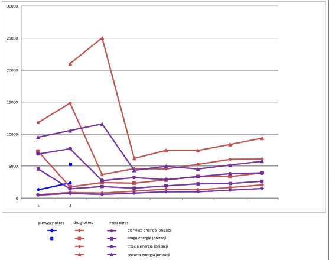
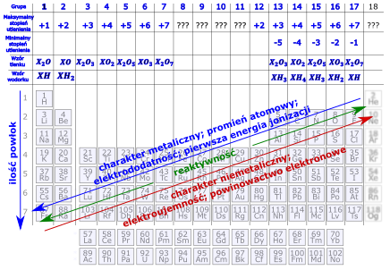

Z położenia pierwiastka w układzie okresowym można odczytać szereg parametrów dotyczących danego pierwiastka. Wśród najważniejszych można wymienić:
Elektroujemność – mówi o tym jak mocno dany atom przyciąga, jak bardzo lubi elektrony? Elektroujemność rośnie w prawo w górę, w razie kłopotów jest umieszczona na układzie okresowym. Fluor ma największą elektroujemność, a frans najmniejszą.
Elektrododatność – jak dany atom chętnie oddaje elektrony, przeciwieństwo elektroujemności. Zmienia się odwrotnie do elektroujemności.
Maksymalny stopień utlenienia to w większości wypadków ilość elektronów walencyjnych, czyli kolokwialnie mówiąc po prostu ile maksymalnie elektronów możesz wypierdolić z danego atomu, oczywiście możemy usunąć tylko elektrony walencyjne.
| Grupa | 1 | 2/ 12 |
3/ 13 |
4/ 14 |
5/ 15 |
6/ 16 |
7/ 17 |
8/ 18 |
9 | 10 | 11 |
|---|---|---|---|---|---|---|---|---|---|---|---|
| Ilość elektronów walencyjnych | 1 | 2 | 3 | 4 | 5 | 6 | 7 | 8 | 9 | 10 | 11 |
| Maksymalny stopień utlenienia | 1 | 2 | 3 | 4 | 5 | 6 | 7 | Wyjątki | |||
Wyjątki mogą szczególnie wystąpić dla grup 8-11, gdyż urwanie takiej ilości elektronów czyli otrzymanie jonu o tak dużym łądunku dodatnim jest mocno niekorzystne. Zasady tej nie spełniają jeszcze dwa pierwiastki – tlen i fluor z uwagi na dużą elektroujemność tychże. Dla fluoru maksymalny stopień utlenienia to 0, występuje on w \(F_{2}\), nie możliwe jest przyjęcie dodatniego stopnia utlenienia przez fluor, gdyż nie ma bardziej elektroujemnego pierwiastka, który wyciągałby elektrony. Dla tlenu maksymalny stopień utlenienia to \(+ II\) w związku z fluorem \(OF_{2}\)
Minimalny stopień utlenienia dla grup głównych jest równy ilości elektronów, które możesz dołożyć, aby uzyskać anion o konfiguracji oktetu elektronowego = 8 elektronów (dla wodoru wyjątkowo dublet) na ostaniej powłoce. W praktyce jest odległość do najbliższego gazu szlachetnego
| Grupa (główna) | I | II | 13 | 14 | 15 | 16 | 17 | 18 |
|---|---|---|---|---|---|---|---|---|
| Minimalny stopień utlenienia | Wyjątki | -4 | -3 | -2 | -1 | |||
Dla pierwiastków bloku d oraz 1,2 i 13 grupy znowu jest loteria. Wynika to z trudności w przyjęciu tak dużej ilości elektronów przez dany atom; tak wysoko naładowane aniony są niestabilne.
Wzór tlenku na maksymalnym stopniu utlenienia.
Wzór ten można wyprowadzić z maksymalnego stopnia utlenienia przez metodę krzyżową (n= maksymalny stopień utlenienia)
\[X^{n}O^{II} \rightarrow X_{2}O_{n}\]
Wyprowadzony wzór w większości wypadków, jeżeli \(n\) jest parzyste należy skrócić do postaci:
\[X_{2}O_{n} = XO_{\frac{n}{2}}\]
Co możemy zapisać rozszerzając tabelkę z maksymalnymi stopniami utlenienia.
| Grupa | I | 2/12 | 3/13 | 4/14 | 5/15 | 6/16 | 7/17 | 8 i dalej | |
|---|---|---|---|---|---|---|---|---|---|
| Maksymalny stopień utlenienia | 1 | 2 | 3 | 4 | 5 | 6 | 7 | wyjątki | |
| Wzór tlenku | \[X_{2}O\] | \[X_{2}O_{2} = \mathbf{XO}\] | \[X_{2}O_{3}\] | \[XO_{2}\] | \[X_{2}O_{5}\] | \[XO_{3}\] | \[X_{2}O_{7}\] | wyjątki |
Oczywiście dla pierwiastków, których maksymalne stopnie utlenienia są wyjątkami, również wzór tlenku o maksymalnym stopniu utlenienia będzie wyjątkiem.
Wzór wodorku/ związku z wodorem
Wzór wodorku można przedstawić w tabeli:
| Grupa | I | II | 13 | 14 | 15 | 16 | 17 | 18 |
|---|---|---|---|---|---|---|---|---|
| Wzór wodorku | XH | \[XH_{2}\] | \[XH_{3}\] | \[XH_{4}\] | \[XH_{3}\] | \[XH_{2}\] | \[XH\] |
Wodorki bloku d wykraczają znacznie poza poziom matury. Oczywiście dla pierwiastków bloku s i p mogą istnieć inne wodorki, np. dla węgla mamy wszystkie alkany, alkeny i alkiny, również inne pierwiastki tworzą również inne związki z wodorem.
\[C_{3}H_{8};C_{2}H_{2};N_{2}H_{4} - hydrazyna,\ H_{2}O_{2}\]
Jon prosty to jon złożony z jednego atomu np. \(Ga^{+};\ \ \ Ga^{3 +};\ \ Cl^{-}\)
Charakter pierwiastków mówi o tym czy dany pierwiastek zachowuje bardziej jak metal czy niemetal
Charakter metaliczny = chęć do tworzenia wiązań metalicznych (metal – metal=stop) lub jonowych (metal – niemetal=sól) = wzrasta z spadiem elektroujemności = lewo dół najsilniej.
Charakter niemetaliczny = chęć do tworzenia wiązań kowalencyjnych (niemetal – niemetal = cząsteczka kowalencyjna) / jonowych (niemetal-metal=sól) =wzrasta jak elektroujemności= prawo góra najsilniej.
Aby to zapamiętać najlepiej spojrzeć gdzie są metale, a gdzie niemetale w układzie.
| metal | Niemetal | |
|---|---|---|
| Metal | Stop (wiązanie metaliczne) | sol |
| niemetal | sol | Zwiazek kowalencyjny/czasteczka |
Aktywność chemiczna mówi jak chętnie dany pierwiastek chętnie reaguje -> zmienia się albo jak charakter metaliczny albo jak niemetaliczny ( czyli najbardziej reaktywne to frans i fluor). Jednocześnie np. takie złoto, znajdujące się na środku układu okresowego jest jednym z mniej reaktywnych pierwiastków.
Promień atomowy jest zdefiniowano jako 95% lub 99% prawdopobieństwa znalezienia wszystkich elektronów jest w takiej odległości od jądra. Taka definicja wynika z falowego charakteru elektronów i prawa nieoznaczoności. Nie wnikając w chemię kwantową elektron można sobie wyobrazić jako chmurę, o ile stojąc daleko od chmury jesteśmy w stanie (mniej więcej) stwierdzić gdzie ona się zaczyna i kończy, natomiast nie jesteśmy tego w stanie zrobić np. Lecąc samolotem, gdyż moment wlecenia w nią jest ciągły (tzn. Wiadomo że w nią wlatujemy, ale nie jesteśmy dokładnie w stanie stwierdzić w którym momencie wlecieliśmy) analogicznie nie jesteśmy w stanie powiedzieć, gdzie ten elektron się zaczyna.
Czynniki, które mają wpływ na promień atomowy to:
- ilość powłok (ale nie podpowłok) jest jak ilość warstw w cebuli; im więcej warstw tym większa cebula, a im więcej powłok tym większy atom
\[K > Na\ lub\ Sb > As\]
-ładunek jądra – jądro jest dodatnie natomiast elektrony są ujemne. Więc im bardziej dodatnie jądro tym silniej ściaga elektrony – czyli tym są bliżej jądra, a tym samym powoduje to zmniejszenie promienia. W zadaniach polegających na argumentacji wystarczy powołać się na to, że im więcej protonów jądrze tym bardziej ściągają swoje elektrony, a więc tym jest mniejszy promień atomowy.
\[N > O > F\]
Trzeciorzędny czynnik, bardzo rzadko mający wpływ to ilość podpowłok, w ten sposób możemy wytłumaczyć wyjątki, w praktyce większy promień talu niż rtęci.
Analogicznie możemy mówić o promieniu jonowym, czyli o promieniu odpowiedniego jonu.
Przy porównywaniu promienia jonowego należy najpierw rozpisać konfigurację danych jonów, a następnie dopiero porównywać promienie i konfiguracje napisanych jonów.
\[Na^{+}:\lbrack Ne\rbrack;Mg^{2 +}:\lbrack Ne\rbrack\]
Czynniki, które mają wpływ na promień jonu to:
- ilość powłok. Im więcej w jonie (nie w atomie, porównujemy te z konfiguracji jonu) tym większy promień jonu
\[Na^{+} < K^{+}\]
- ładunek jądra czyli również liczba atomowa. Im większy ładunek jądra tym mniejszy promień, więcej protonów w jądrze silniej ściąga elektrony, elektrony są położone bliżej jądra, a więc promień jest mniejszy.
Dodatkowo możemy wymienić trzeciorzędowe
- ilość podpowłok – im więcej podpowłok tym większy promień można w ten sposób wytłumaczyć wyjątki związane z pomiędzy drobnym zwiększaniem się promienia przy zajmowaniu kolejnej podpowłoki
- ilość elektronów – kiedy jedyną różnicą pomiędzy jonami i atomami tego samego jest ilość elektronów, jest chyba oczywiste, że drobina o większej ilości elektronów będzie miała większy promień.
- spinowość jonu – może się zdarzyć, iż te same jony metali bloku w różnych kompleksach mają różne promienie. Jest to związane z rozszczepieniem orbitali d przez ligandy i różnym możliwym rozmieszczeniem elektronów d na tych rozczepionych podpowłokach. Jony metali w kompleksach wysokospinowych (a więc taki o słabym wpływie ligandów na energie orbitali d) maja większe promienie niż te w niskospinowych. Temat jednak ten można dokładniej poruszyć do olimpiady, a nie do matury.
Uszereguj promienie jonowe i atomowe: \(K^{+};\ Cl^{-};S^{2 -};K\ ;Al\)
Rozwiązanie tego zadania wymaga wpierw napisania konfiguracji podpowłokowej jonów i porównania ilości powłok, a potom ilości protonów.
\[K^{+}:1s^{2}2s^{2}2p^{6}3s^{2}3p^{6}\ \ \ \ \ \ \ \ \ \ \ \ \ \ \ - powłok = 3\ \ protony = 19\]
\[Cl^{-}:1s^{2}2s^{2}2p^{6}3s^{2}3p^{6}\ \ \ \ \ \ \ \ \ \ \ \ - powłok = 3\ protony = 17\]
\[S^{2 -}:1s^{2}2s^{2}2p^{6}3s^{2}3p^{6}\ \ \ \ \ \ \ \ \ \ \ - 3\ \ \ p^{+} = 32\]
\[Ga:\ 1s^{2}2s^{2}2p^{6}3s^{2}3p^{6}4s^{2}3d^{10}4p^{1}\ \ \ \ \ \ \ \ \ - 4\ \ \ \ \ \ p^{+} = 31\]
\[K\ ::1s^{2}2s^{2}2p^{6}3s^{2}3p^{6}4s^{1}\ \ \ \ \ \ \ \ \ \ \ \ \ \ \ \ \ \ \ \ \ \ \ \ \ - 4\ \ \ \ \ p^{+} = 19\ \]
Grupując jony po ilości powłok:
3 powłoki: \(K^{+};Cl^{-};S^{2 -}\)
4powłoki: \(Ga;K\)
I potem w grupach grupuje po ładunku jądra.
\[K^{+} < Cl^{-} < S^{2 -}\]
\[Ga < K\]
Łącząc te informacje dostajemy:
\[K^{+} < Cl^{-} < S^{2 -} < Ga < K\]
Energia jonizacji
(n- ta )Energia jonizacji
Energię jonizacji (n –tą) definiujemy jako ilość energii, którą musimy dostarczyć, aby urwać n-ty elektron od drobiny, której urwaliśmy już (n – 1) elektronów. Czyli inaczej mówiąc jest to ilość energii, którą musimy dostarczyć , aby urwać z atomu/ jonu z danego, jednego elektronu. Elektrony urywane są po kolei, czyli np. druga energia jonizacji mówi o procesie pozbawienia jednego elektronu z utworzeniem kationu dwudodatniego, a więc urwania go od kationu jednododatniego.
Pierwsza energia jonizacji \(E_{jon_{1}}\) np. Al to energia przemiany
\[Al\ -^{+ E_{jon_{1}}} \rightarrow Al^{+} + e^{-}\]
Druga \(E_{jon_{2}}\) natomiast to energia przemiany, w której startujemy z jonu jednododatniego.
\[Al^{+} -^{+ E_{jon_{2}}} \rightarrow Al^{2 +} + e^{-}\]
Trzecia
\[Al^{2 +} -^{+ E_{jon_{3}}} \rightarrow Al^{3 +} + e^{-}\]
Najłatwiej oczywiście jest usunąć elektron(y) z metali, gdyż mają one niskie elektroujemności, im niższa elektroujemność tym z danego atomu łatwiej oderwać elektron. Oczywiście im bardziej dodatni jon, im mniej elektronów ma dany jon tym trudniej usunąć kolejny elektron; a więc łatwiej jest usunąć pierwszy elektron niż drugi, a drugi łatwiej niż trzeci. Jednocześnie korzystne jest uzyskanie konfiguracji gazu szlachetnego, co czesto powoduje delikatne obniżenie tej energii jonizacji, wtedy gdy uzyskujemy tę konfigurację. Również korzystne jest uzyskanie konfiguracji, w której obsadzone są całkowicie lub półcałkowicie podpowłoki; co np. powoduje obniżenie energii pierwszej energii jonizacji dla pierwiastków trzeciego okresu (uzyskujemy wtedy konfigurację elektronów walencyjnych \(n\ s^{2}\)). BARDZO NIEKORZYSTNE JEST URWANIE ELEKTRONÓW NIEWALENCYJNYCH = w tym wypadku mamy bardzo duze energie jonizacji, gdyż elektrony z atomów niewalencyjnych trzymają się bardzo mocno atomu. Np.
\[K \rightarrow K^{+} + e^{-}\]
Ten proces przedstawia pierwszą energię jonizacji, a więc pozbawienie pierwszego elektronu. Jest to proces o względnie małej energii jonizacji, gdyż wyrywamy elektron walencyjny. Osiągamy konfigurację gazu szlachetnego.
\[K^{+} \rightarrow K^{2 +} + e^{-}\]
Ten proces już jest mocno niekorzystny, gdyż elektron urywamy z rdzenia atomowego; urywany elektron nie jest walencyjny.

Po porównaniu wartości energii jonizacji dla danego atomu jesteśmy w stanie powiedzieć, ile dany atom ma elektronów walencyjnych, a więc w której grupie jesteśmy. Kolejne wartości energii jonizacji elektronów walencyjnych zwiększają się, ale mają podobne wartości. Skok tej wartości następuje w momencie, w którym urywamy pierwszy elektron niewalencyjny. Wiedząc, ile urwaliśmy elektronów walencyjnych, wiemy ile elektronów walencyjnych miał dany atom, a więc, w której był grupie.
Porównując dwie energie jonizacji (te same tzn. mówiące o tym samym elektronie) dwóch różnych atomów znajdujących się w tej samej okresie możemy powiedzieć, że mniejszą energię jonizacji ma atom o mniejszej elektroujemności a wiec „bardziej po lewej stronie układ okresowego”. Analogicznie porównując również dwie energie jonizacji dwóch różnych atomów w tej samej grupie można powiedzieć, że mniejszą energię jonizacji znowu będzie miał ten o mniejszej elektroujemności, a więc ten niżej.
Powinowactwo elektronowe (n – te) definiujemy jako ilość energii jaką uzyskujemy przez przyłaczenie n – tego elektronu do atomu albo jonu o ilości elektronów \(n - 1\). Analogicznie tak jak w przypadku energii jonizacji możemy mówić o kolejnych energiach powinowactwa elektronowego; i również elektrony przyłączamy „po kolei”
Powinctwo elektronowe
\[S + e^{-} \rightarrow S^{-} + E_{pow}^{elek1}\]
Powinactwo elektronowe
\[S^{-} + e^{-} \rightarrow S^{2 -} + E_{pow}^{elek2}\]
Oczywiście największą ilość energii wydzieli atom o najwyższej elektroujemności, ten, który najbardziej lubi elektrony, więc korzystniej jest przyłączyć elektron do atomu bardziej elektroujemnego niż do mniej elektroujemnego. Czyli lepiej jest przyłączyć elektron do tlenu niż do siarki.
Zawsze największą ilość energii otrzymujemy przyłączając pierwszy elektron, przyłączenie kolejnego generuje mniejszą ilość energii, bo najpierw musimy go zbliżyć go do anionu, który ma już ładunek ujemny, więc zawsze pierwsze powinowactwo elektronowe będzie miało najwyższą energię dla danego atomu.
Korzystne jest znowu uzyskanie oktetu, więc jeżeli atom osiąga oktet mamy względnie wysokie powinowactwo elektronowe.
Jeżeli natomiast przyłączamy elektrony do jonu, dla którego mamy już zapełnioną powłokę, a więc poza oktet, wartości powinowactwa elektronowego są skrajnie niskie.
Analogicznie do porównywania wartości energii jonizacji możemy porównywać wartości powinowactwa elektronowego.
Ilość wartości powinowactwa elektronowego o podobnych wartościach mówi ile elektronów możemy przyłączyć przed uzyskaniem oktetu, a więc jest możemy z tej wartości łatwo odczytać, w której grupie układu okresowego jesteśmy; np. jeżeli mamy dwie podobne wartości powinowactwa, a kolejne wartości spadają tzn. że pierwiastek jest w 16 grupie, bo dla pierwiastków tej grupy potrzebujemy dwóch elektronów, aby uzyskać oktet.
Analogicznie porównanie powinowactwa (tej samej czyli dotyczące przyłączenia tego samego elektronu) w grupie i w okresie jest porównaniem elektroujemności. Im większe powinowactwo elektronowe w tej samej grupie tym większa elektroujemność, a więc im tym niższy okres układu okresowego (bardziej w górę). Analogicznie im większe powinowactwo elektronowe w tym samym okresie tym większa elektroujemność, a więc większa grupa (bardziej w prawo). W tym wypadku należy upewnić czy dane powinowactwo nie dotyczy dorzucenia elektronu poza oktet, gdyż w tym wypadku oczywiście będzie mniejsze.
